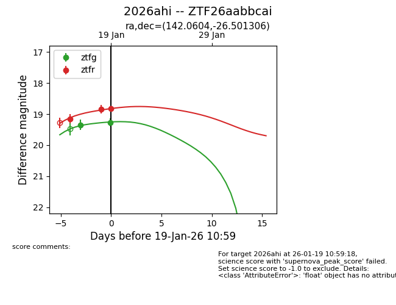
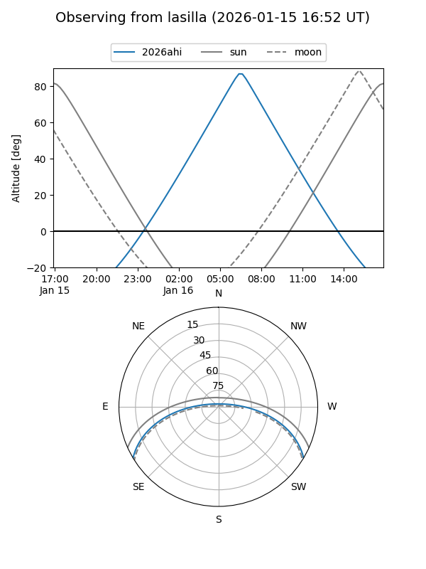
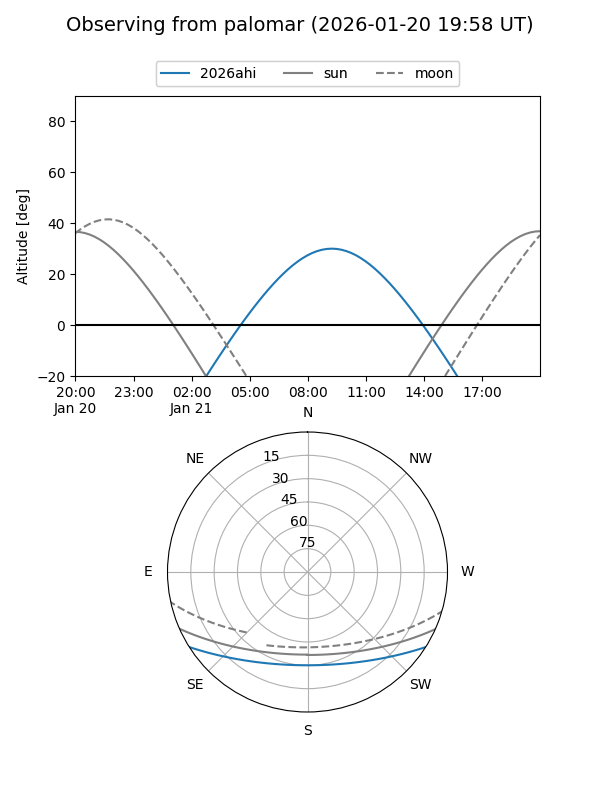
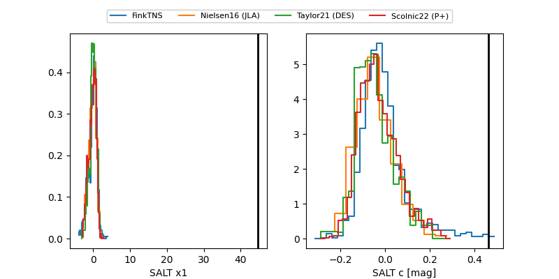

2026ahi
Target 2026ahi at 2026-01-23 11:46
Aliases and brokers:
FINK: link
Lasair: link
ALeRCE: link
TNS: link
YSE: link
alt names
ZTF26aabbcai (ztf,fink_ztf)
2026ahi (tns,yse)
Coordinates:
equatorial (ra, dec) = 142.0604,-26.50131
equatorial (HMS+DMS) = 09:28:14.49,-26:30:04.70
galactic (l, b) = (256.2983,+17.45370)
Flags:
Photometry:
last ztfg=19.20, ztfr=18.73
4 ztfg, 5 ztfr detections
Lightcurve

Visibility


Additional plots
